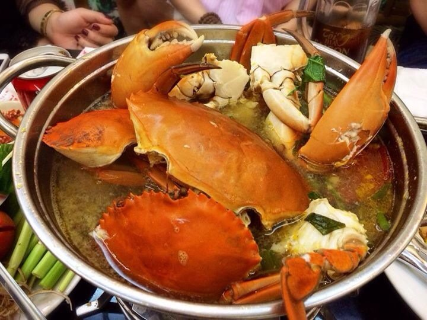

Lẩu Cua
Đa số mọi người đều chọn cách đi nhà hàng để thưởng thức món lẩu cua với khoản chi phí rất lớn. Nhưng nếu bạn dành một chút thời gian tham khảo bài viết này thì bạn sẽ có cách nấu lẩu cua biển thơm ngon đúng vị như ngoài hàng với khoản chi phí chỉ bằng 1 nửa đi ăn ngoài.